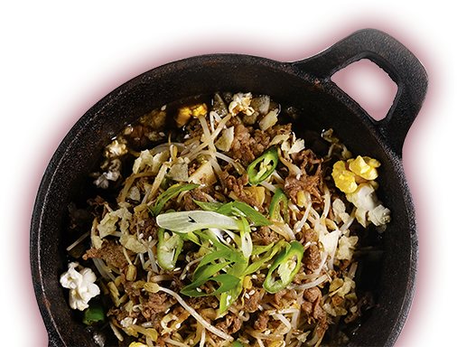
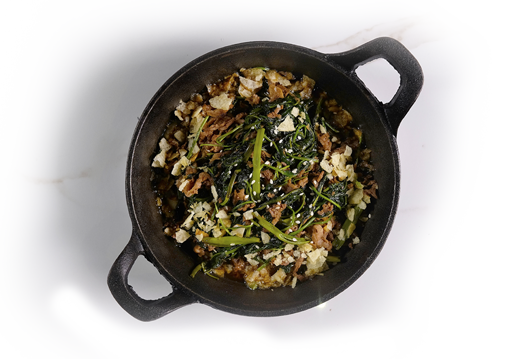
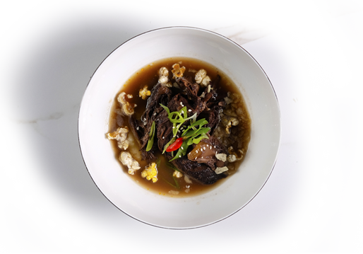
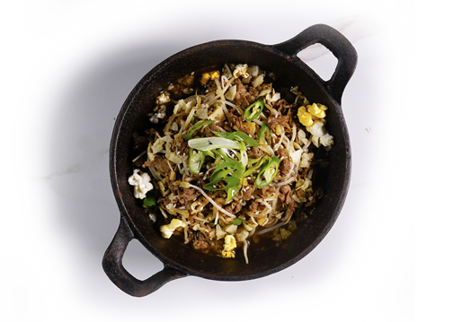

메인 메뉴
chapter 2
Beefs
소고기 요리
모든 요리에는 후식이 무료로 제공됩니다
(쿠키아이스크림 or 커피,녹차,허브차)

Beef Kangkong 450
비프 캉콩
Egg Omelet, White Shrimp, Ketchup
소불고기와 캉콩(시금치과 야채)를
대만 사차소스로 함께 볶은 요리

Beef Kangkong 450
브래이스 비프
Medium Size of Squid, Onions, Mashed
미국산 소고기의 등심부위를 레드와인으로
요리하여 으깬 감자와 함께 곁들인 요리

Pepper Beef 420
페퍼 비프
White Shrimp, Onions, Mashed
소불고기를 숙주나물과 함께 요리한 후
검은후추로 마무리한 요리
